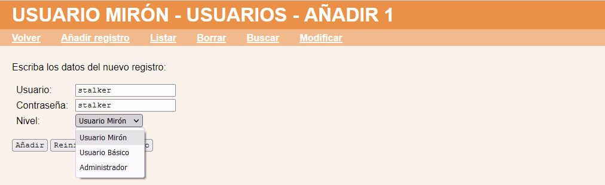
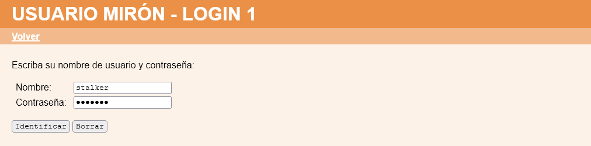
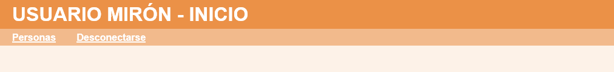
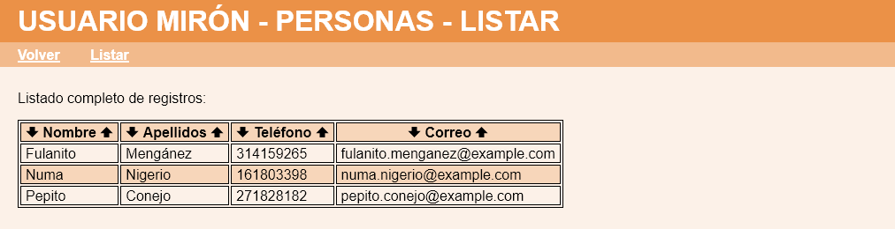

Usuario mirón - Comentarios
- Al crear un nuevo usuario de la aplicación, se ofrecerá la opción "Usuario mirón":

- Un usuario mirón debe identificarse como el resto de usuarios de la aplicación:

- El usuario mirón sólo tendrá la posibilidad de ver los registros de Personas creadas por el resto de usuarios:


